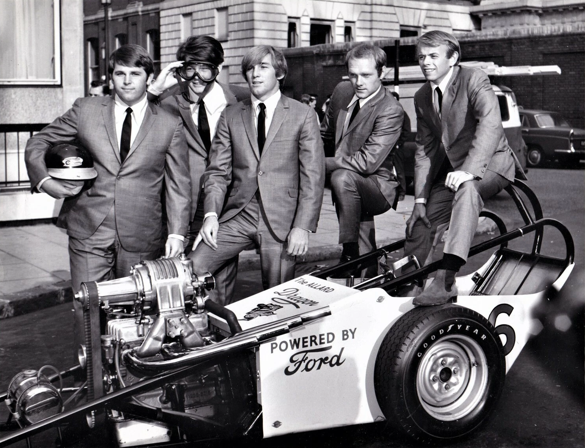

Fun, Fun, Fun is The Beach Boys' 1964 hit about a girl, her father's Ford Thunderbird and a very long drive.
Capitol released it on February 3, 1964, and it climbed to No. 5 on the Billboard Hot 100.
It landed in the middle of Beatlemania and proved the band could still sell records.

Table of Contents
The Story Behind Fun, Fun, Fun
Brian Wilson and Mike Love share the writing credit.
The lyrics tell a simple story.
A teenage girl deceives her father so she can go hot-rodding in his Ford Thunderbird.
At the end he finds out and takes the keys away.
The chorus still insists she will have a great time anyway.
Where the Thunderbird Came From
Several stories compete for the credit.
Some of the lyrics were partly inspired by events from Dennis Wilson's life.
Radio manager Bill "Daddy-O" Hesterman of Salt Lake City told another version.
He said it came from an incident with Shirley Johnson, the daughter of the station's owner.
She had borrowed her father's 1963 Thunderbird, claiming she was going to the library.
Neither account is confirmed beyond those tellings, so treat both as band lore.
The Chuck Berry Connection
The opening guitar line was inspired by a Chuck Berry intro.
The drum fills echo Phil Spector's productions.
The early phrases also share chord and melody ideas with "Da Doo Ron Ron."
Berry had already supplied the blueprint for Surfin USA the year before.
Recording on New Year's Day
The Beach Boys began the track on January 1, 1964, at United Western Recorders in Hollywood.
Vocals and overdubs followed on January 8 and 9.
Brian Wilson produced the session himself.
Their father and manager Murry Wilson had cancelled an earlier session, and Brian rescheduled it.
The single ran 2:16, and the album followed as Shut Down Volume 2.
Who Played on the Track
- Mike Love, lead and bass vocals
- Brian Wilson, harmony vocals, piano and Hammond B3 organ
- Carl Wilson, harmony vocals, lead and rhythm guitars
- Al Jardine, harmony vocals and bass guitar
- Dennis Wilson, harmony vocals and drums
- Hal Blaine, tambourine and additional drums
- Steve Douglas, tenor saxophone
- Ray Pohlman, electric bass
Chart Success and Legacy
The single entered the Hot 100 in February 1964 and peaked at No. 5 in March.
That put the band in the same neighborhood as the Beatles, who owned that spring's chart.
Al Jardine later said he and Brian first felt the record "didn't cut it" and "wasn't complete yet."
Listeners disagreed, and the single went on to earn a Platinum certification from the RIAA.
It also widened the band's sound beyond surf themes toward cars and teenage freedom.
That road led to Good Vibrations two years later.
| Country / body | Chart or award | Result |
|---|---|---|
| United States | Billboard Hot 100 | No. 5 |
| Canada | CHUM Chart | No. 6 |
| Australia | National chart | No. 6 |
| New Zealand | National chart | No. 8 |
| West Germany | National chart | No. 49 |
| United Kingdom | UK Singles Chart | Did not chart |
| United States | RIAA certification | Platinum |
The Status Quo Cover
The British band Status Quo teamed up with The Beach Boys on a new version in 1996.
Francis Rossi sang lead, with Mike Love taking a new verse.
It reached No. 24 in the UK, finally giving the song a British chart entry.
FAQ
Who wrote Fun, Fun, Fun by The Beach Boys?
Brian Wilson and Mike Love are credited as the writers.
Brian Wilson produced the recording.
What is the song about?
It follows a teenage girl who deceives her father so she can borrow his Ford Thunderbird.
He finds out at the end and takes the keys away.
When was the single released?
Capitol Records released the single on February 3, 1964.
It was backed with "Why Do Fools Fall in Love" and also appeared on the album Shut Down Volume 2.
How high did the single chart?
It reached No. 5 on the Billboard Hot 100 in March 1964.
It did not chart in the United Kingdom.
Did The Beach Boys copy Chuck Berry?
The opening guitar line was inspired by a Chuck Berry intro.
The rest of the arrangement is original Beach Boys work.
A borrowed car and a Chuck Berry guitar riff gave the band one of its most durable singles.
Read more about the band's full run of hits on the The Beach Boys biography page.
Explore the wider scene on the Garage & Surf Rock genre hub.
Wikipedia's entry on the song covers its recording and chart history in more depth.
More than sixty years later, the single still sounds like an open road.
Back to the 1960smusic.net homepage to explore every genre of the decade.